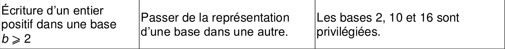
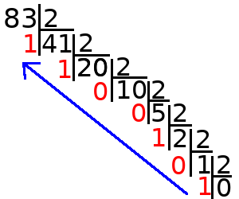
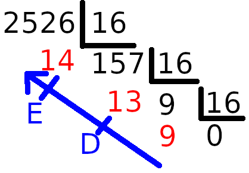

CH5 : Écrire un entier positif dans une base supérieure ou égale à 2⚓︎
Programme officiel

1. Écriture des nombres entiers positifs en base 10⚓︎
En base \(10\), système décimal, il y exactement 10 chiffres : \(0\), \(1\), \(2\), \(3\), \(4\), \(5\), \(6\), \(7\), \(8\), \(9\).
Considérons un nombre entier, écrit en base \(10\) (en décimal), par exemple \(2743\) :
On peut transformer l'écriture de ce nombre de la manière suivante :
À savoir
En base \(10\), Tout nombre entier peut être écrit comme une somme coefficientée de puissances de \(10\).
Pour déterminer cette somme coefficientée :
- Au dessus de chaque chiffre, de droite à gauche, on écrit des puissances croissantes de \(10\) (en commençant par \(10^0\)) :
- On multiplie chaque chiffre (= le coefficient) par la puissance de \(10\) correspondante :
2. Représentation en base 2 des entiers positifs⚓︎
2.1 Bits et mots machine⚓︎
Dans un ordinateur, toutes les informations (données ou programmes) sont représentées grâce à des 0 et des 1.
À connaître
- Un bit (pour BInary digiT) est un \(0\) ou bien un \(1\);
- Un ensemble de 8 bits est appelé un octet
 ou un byte
ou un byte  ;
; - Un mot machine ou words est un ensemble de 2, 4 ou 8 octets.
Exemple :
Une machine de 32 bits est un ordinateur manipulant des mots de 4 octets (\(4\times8 = 32\) bits). C'est ce principe de regroupement en paquets de bits, ou mots machine, qui permet de donner un sens à tout le paquet de bits et ainsi pouvoir représenter et manipuler des données autres que des \(0\) et des \(1\) :
- des nombres entiers (positifs ou négatifs),
- des (approximations de) nombres réels,
- des caractères alphanumériques et des textes, des images, des sons, des vidéos ...
2.2 Convertion binaire -> décimal⚓︎
Savoir faire
Pour convertir un nombre entier, donné en base \(2\) (binaire), vers le décimal, on procède ainsi:
- Au dessus de chaque chiffre, de droite à gauche, on écrit des puissances croissantes de \(2\) :
- On multiplie chaque chiffre par la puissance de \(2\) correspondante :
Remarques :
Notation
Pour lever l'ambigüité entre les notations Décimale et Binaire (par ex. pour des nombres décimaux tels que 110), on note les nombres en écriture binaire en utilisant la notation : 1102.
Et en python, la notation sera 0b110.
conversion binaire vers décimal en Python
>>>int('0b11011',2)
27
2.3 Convertion décimal -> binaire⚓︎
Savoir faire
Pour convertir un nombre décimal (en base \(10\)) en nombre binaire (en base \(2\)) on procède ainsi :
- réaliser la division euclidienne du nombre décimal (en base \(10\)) par 2, jusqu'à ce que le quotient soit égal à 0.
- lire alors la suite de tous les Restes mais à l'envers (en commençant du bas vers la haut)

Dans cet exemple, on peut dire que: 8310 = 10100112
Conversion décimal vers binaire en Python
>>>bin(1534)
'0b10111111110'
3. Représentation hexadécimale des entiers positifs⚓︎
3.1 Les chiffres de la base hexadécimale⚓︎
L'inconvénient essentiel du système binaire est la longueur de l'écriture des nombres qu'il génère. Pour cette raison, le système hexadécimal, ou système de base 16 est très souvent employé.
- Pour écrire en base 2, il faut 2 chiffres différents : le 0 et le 1.
- Pour écrire en base 10, il faut 10 chiffres différents: 0,1,2,3,4,5,6,7,8,9.
- Pour écrire en base 16, il faut donc 16 chiffres différents : 0,1,2,3,4,5,6,7,8,9,A,B,C,D,E,F.
On a donc la correspondance :
- A représente 10
- B représente 11
- C représente 12
- D représente 13
- E représente 14
- F représente 15
3.2 Convertion hexadécimal -> décimal⚓︎
Savoir faire
Pour faire la conversion, on procède comme pour passer du binaire au décimal mais on utilise les puissances de 16.
\(4A5E = 4\times16^3+10\times16^2+5\times16^1+14\times16^0=19038_{10}\)
| Hexadécimal | \(4\) | \(A\) | \(5\) | \(E\) |
|---|---|---|---|---|
| Exposant | \(3\) | \(2\) | \(1\) | \(0\) |
| Puissance de \(16\) | \(16^3\) | \(16^2\) | \(16^1\) | \(16^0\) |
Remarques :
Notation
On note les nombres en écriture hexadécimale : 4A5E16.
Et en python, la notation sera 0x4a5e.
Conversion hexadécimal vers décimal en Python
>>>int('0x4a5e',16)
19038
3.3 Convertion décimal -> hexadécimal⚓︎
Savoir faire
Pour convertir un nombre décimal en nombre hexadécimal on procède de la même façcon que pour le binaire :
- réaliser la division euclidienne du nombre décimal par 16, jusqu'à ce que le quotient soit égal à 0.
- lire alors la suite de tous les Restes mais à l'envers (en commençant du bas vers la haut)

Dans cet exemple, on peut dire que: 252610 = 9DE16
Conversion décimal vers hexadécimal en Python
>>>hex(1534)
'0x5fe'
3.4 Écriture des octets⚓︎
Un octet (mot de 8 bits) peut représente des valeurs comprises entre 0 et 25510.
- 0 pour 0000 0000 en binaire ou 00 en hexadécimal.
- 255 pour 1111 1111 en binaire ou FF en hexadécimal.
Méthode pour passer du binaire à l'hexadécimal
Tableau de correspondance des chiffres en hexadécimal
| hexa | bin (sur 4 bits) | dec |
|---|---|---|
| 0 | 0000 | 0 |
| 1 | 0001 | 1 |
| 2 | 0010 | 2 |
| 3 | 0011 | 3 |
| - | ---- | - |
| 9 | 1001 | 9 |
| A | 1010 | 10 |
| B | 1011 | 11 |
| C | 1100 | 12 |
| D | 1101 | 13 |
| E | 1110 | 14 |
| F | 1111 | 15 |
Pour convertir un octet représenté en binaire en hexadécimal, il faut séparer l'écriture de l'octet en deux "paquets" de 4 bits et faire la correspondance avec les chiffres du tableau.
Exemple : 0100 1010 représente l'octet 4A en hexadécimal.
Faire le contraire pour passer de la représentation en hexadécimal à la représentation bianire.
Exemple : E5 représente l'octet 1110 0101 en binaire.
4. Généralisation pour une base b quelconque⚓︎
On généralise le Système de Numération Décimale positionnelle, en un Système de Numération positionnel de base b.
Il faut déjà commencer par choisir des notations pour un ensemble de *b chiffres :
- Si \(b\le 10\), alors les chiffres sont un sous-ensemble de {0,1,2,3,4,5,6,7,8,9};
- Si \(b\gt 10\), alors les chiffres simples ne suffisent plus, il en faut de nouveaux. On choisit les chiffres dans l'ensemble {0,1,2,3,4,5,6,7,8,9,A,B,C,..,X,Y,Z}.
Notation d'un nombre x en base b
xb désignent le nombre x écrit en base b.
4.1 Écriture de Nombres en Base b⚓︎
Pour lire, on procède comme pour les autres bases mais on utilise les puissances de b.
Exemple d'un nombre entier positif écrit en base 4 :
\(312 = 3\times4^2+1\times4^1+2\times4^0=54_{10}\)
| Base 4 | $3$ | $1$ | $2$ |
| :-: | :-: | :-: | :-: |
| Exposant | $2$ | $1$ | $0$ |
| Puissance de $4$ | $4^2$ | $4^1$ | $4^0$ |
zéro en base b
Le chiffre zéro s'écrit 0 dans toutes les bases
4.2 Conversion de bases⚓︎
Conversion de base \(a\) \(\Leftrightarrow\) base \(b\)
Pour convertir un nombre \(x_a\) d'une base \(a\) vers une base \(b\) (et/ou réciproquement), il suffit (par exemple) de passer par le décimal (base \(10\)):
Conversion Base \(8\) \(\rightarrow\) Base \(2\)
Soit \(x = 1261_8\) un nombre en base \(8\). Comment écrire \(x\) en base \(2\) ?
Corr
-
Conversion de \(x\) en Base \(10\)
\(\begin{align} x &= (1\times 8^3+2\times 8^2+6\times 8^1+1\times 8^0)_{10} \\ &= (512 + 128 + 48 + 1)_{10} \\ &= 689_{10} \end{align}\)
-
Conversion Base \(10\) \(\rightarrow\) Base \(2\):
On réalise une succession de divisions euclidiennes par \(2\), on conservant à chaque fois les restes :\(689\) \(344\) \(\rightarrow\) reste \(1\) \(172\) \(\rightarrow\) reste \(0\) \(86\) \(\rightarrow\) reste \(0\) \(43\) \(\rightarrow\) reste \(0\) \(21\) \(\rightarrow\) reste \(1\) \(10\) \(\rightarrow\) reste \(1\) \(5\) \(\rightarrow\) reste \(0\) \(2\) \(\rightarrow\) reste \(1\) \(1\) \(\rightarrow\) reste \(0\) \(0\) \(\rightarrow\) reste \(1\) Conclusion : \(689_{10} = 1010110001_2\)
-
Conclusion :
\(1261_8 = 1010110001_2\)
Conversion Directe Base \(a\) \(\Rightarrow\) Base \(b\)
On peut aussi convertir directement un nombre \(x\) en base \(a\) (\(x_a\)), vers une base \(b\), en :
- réalisant une succession de divisions de \(x_a\) par \(b\), jusqu'à ce que le quotient soit égal à \(0\)
- en conservant les restes \(r\) pour chaque division (\(0\le r \lt b\))
- Le nombre \(x_b\) (\(x\) en base \(b\)) est alors obtenu en lisant les restes à l'envers (du dernier vers le premier)